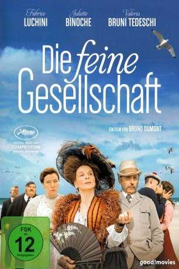
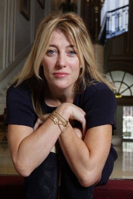

#11026 Die Feine Gesellschaft
 
 IMDB-Wertung: 6.0 / 10
IMDB-Wertung: 6.0 / 10  Metascore: 66
Metascore: 66 
Sommer 1910 an einem idyllischen Dünenstrand in der Normandie: Der reiche André van Peteghem aus Lille möchte zusammen mit seiner Frau Isabelle und seinen beiden Töchtern einige erholsame Tage in seinem Strandhaus verbringen. Ebenfalls mit von der Partie sind Isabelles Bruder Christian, Andrés Schwester Aude und deren Sohn Billie. Dieser wäre lieber ein Mädchen und verkleidet sich daher gerne mit Rock und Perücke.
Jahr: 2016
Dauer: 122 Minuten
FSK: 12
Land: Frankreich Studio: Neue Visionen FilmverleihTonspuren:
Untertitel: Deutsch,
Auflösung: 720p (1280x528) Größe: 3758 MB
Genre: Komödie
Regisseur: Bruno Dumont
Drehbuch: Bruno Dumont, Bruno Dumont
Soundtrack:
Darsteller:
 Fabrice Luchini als André Van Peteghem
Fabrice Luchini als André Van Peteghem Juliette Binoche als Aude Van Peteghem
Juliette Binoche als Aude Van Peteghem-  Valeria Bruni Tedeschi als Isabelle Van Peteghem
- Raph als Billie Van Peteghem
- Didier Després als Alfred Machin
- Manon Royère als Blanche Van Peteghem
- Lauréna Thellier als Gaby Van Peteghem
- Jean-Luc Vincent als Christian Van Peteghem
- Brandon Lavieville als Ma Loute Brufort
- Cyril Rigaux als Malfoy
- Laura Dupré als Nadège
- Thierry Lavieville als L'Eternel Brufort
- Caroline Carbonnier als La mère Brufort
- Maya Sarac als La dame à l'ombrelle jaune
- Noah Noulard als Cloclo Brufort
- Julian Teiten als Patte Brufort
- Noa Creton als Ti-Louis Brufort
- Fabien Fenet als L'ecclésiastique
- Yohann Belz als Le pêcheur du parc à huîtres
- Yohann Poulain als Le policier naufrage
- Cécile Després als La serveuse omelette
- Christian Coeugniet als Le colonel
- Angélique Vergara als Nudiste 1
- Anna Zakharova als Nudiste 2
- Yannick Pouchenaud als Le scaphandrier
- Elise Merlin als Chanteuse procession
- Manon Morgenthaler als Chanteuse procession
- Evelyne Dandoy als Chanteuse procession
- Fabrice Jolie als Chanteur procession
Datei: X:\2016(A-F)\Feine Gesellschaft, Die (2016, FSK12, 1280x528).mkv seit 18.04.2019
Festplatte: HD 2016(A-Z)
 Es gibt insgesamt 147 Filme in der Gruppe '2016(A-F)'
Es gibt insgesamt 147 Filme in der Gruppe '2016(A-F)'